De la encuesta al escaño
Un flujo de trabajo bayesiano en R para la agregación electoral e incertidumbre provincial
José Luis Cañadas Reche
Jornadas de R de Canarias
Actualizado el 09/11/2026
25 de noviembre de 2026
El problema
Las encuestas dan porcentajes . El Congreso reparte escaños .
350 escaños, repartidos en 52 circunscripciones
Cada provincia aplica D’Hondt con barrera del 3 %
Un mismo % nacional puede dar mayorías muy distintas
La pregunta real no es “¿qué % saca el PP?” , es “¿qué probabilidad tiene cada reparto de escaños?”
Por qué no basta un número
“PP y VOX sumarían mayoría absoluta”
Un titular así esconde una distribución entera de escenarios, porque pueden sumar de muchas formas distintas
Con un enfoque bayesiano no perseguimos el número . Perseguimos la distribución completa y, con ella, la probabilidad de cada mayoría.
El flujo en una imagen
La materia prima son las encuestas publicadas (y vienen sin los microdatos)
Encuestas
⬇ dos modelos brms en cascada
Posterior nacional de 14 categorías
⬇ + error histórico de las encuestas
Posterior ajustado
⬇ + reparto provincial con dos efectos + candidaturas de cada provincia
Posterior provincial
⬇ D’Hondt, provincia a provincia
Distribución posterior de escaños
Los datos
Fuentes: ciento76 y objetivo176
Solo encuestas con tamaño muestral publicado
Sin CIS ni ElectoPanel en el modelo de los grandes. Decisión mía
Trackings que acumulan (SW Demoscopia, SocioMétrica): solo la entrega más reciente de campos solapados. Cada entrevistado cuenta una vez
Modelo 1: 35 encuestas de 16 casas , hasta el 06/11/2026
Modelo 2: 100 encuestas de 10 casas , desde junio de 2025
Las encuestas
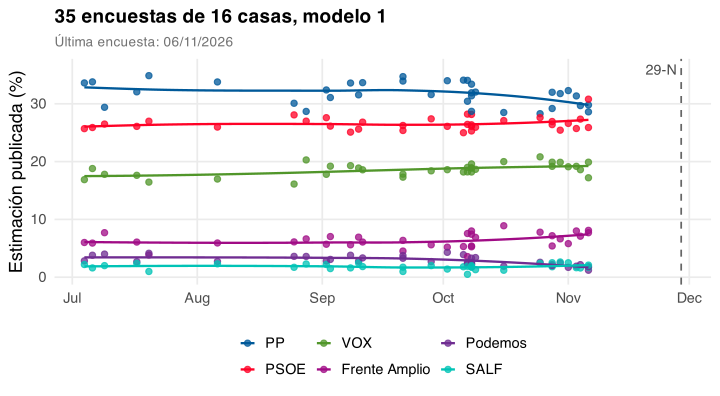
Los partidos regionales
La mayoría de encuestas no publica PNV, BNG o Junts. Sin ellos no hay reparto provincial coherente.
Modelo 1: PP, PSOE, VOX, SUMAR, Podemos, SALF y BLOQUE Modelo 2: cómo se reparte el BLOQUE entre 8 subceldasEl segundo reparte lo que el primero asigna al BLOQUE
De porcentajes a cell_counts
Cada encuesta se convierte en votos: porcentaje publicado × tamaño muestral. Cifras inventadas:
<- rbind (A = c (PP = 32 ,PSOE = 27 ,VOX = 19 ,SUMAR = 6 ,PODEMOS = 3 ,SALF = 2 ,BLOQUE = 11 B = c (PP = 30 ,PSOE = 28 ,VOX = 20 ,SUMAR = 7 ,PODEMOS = 2 ,SALF = 2 ,BLOQUE = 11 <- c (A = 1000 , B = 3000 )<- round (pct / 100 * n)
PP PSOE VOX SUMAR PODEMOS SALF BLOQUE
A 320 270 190 60 30 20 110
B 900 840 600 210 60 60 330
Cada fila es una encuesta. trials(n) es la suma de su fila: la encuesta B pesa más.
cell_counts es una matriz dentro del data frame, con una columna por categoría.n es la suma de la fila, no el tamaño publicado: el redondeo puede diferir en 1 voto.En el modelo 2, las columnas son las subceldas del BLOQUE y trials(bloque) es su suma.
Tratar los porcentajes publicados como conteos es una simplificación: esos porcentajes ya llevan la cocina de cada casa.
El detalle está en el post de voto .
Modelo 1
Modelo multinomial bayesiano con brms: cada encuesta aporta un vector de votos.
<- brmsformula (| trials (n) ~ time + (1 | encuestadora)brm (multinomial (),prior = priors_multinomial (form, dat),iter = 4000 ,warmup = 1000 ,chains = 4 ,init = 0.1 ,control = list (adapt_delta = 0.95 , max_treedepth = 12 )
(1 | encuestadora): el efecto casa , sin pendiente propiatime: días desde el 1 de julio; una tendencia común por partidoEn Andalucía era (time | empresa): con pocas encuestas por casa, no se aprende
cell_counts es una matriz con una columna por categoría: los votos de cada encuesta, porcentaje publicado por tamaño muestral.trials(n) indica el total de cada fila. Así, una encuesta con más muestra pesa más.El multinomial usa el PP como referencia: cada categoría se modela en log-odds frente al PP, que no tiene ecuación propia.
time da una pendiente por categoría, común a todas las casas.(1 | encuestadora) da un intercepto por casa y por categoría. Las casas con pocas encuestas se encogen hacia 0.Los efectos casa están centrados en 0: el modelo estima la media de las encuestadoras, no el resultado.
init = 0.1, adapt_delta = 0.95 y max_treedepth = 12 hacen el muestreo más prudente, a cambio de más tiempo.
Modelo 2
Reparte el BLOQUE entre Junts, ERC, PNV, EH Bildu, BNG, CC, UPN y RESTO.
<- brmsformula (cell_counts | trials (bloque) ~ time)brm (multinomial (),prior = priors_multinomial (form, dat),iter = 4000 ,warmup = 1000 ,chains = 4 ,init = 0.1 ,control = list (adapt_delta = 0.95 )
trials(bloque): los votos del BLOQUE , no la muestraSin efecto casa: ElectoPanel pesa el 60 % de los votos del BLOQUE
Ventana larga, desde junio de 2025: hay pocas encuestas con regionales
trials(bloque) es la diferencia clave: el total son los votos del BLOQUE. Una encuesta con n = 1.000 y BLOQUE del 11 % entra con 110 votos.El modelo solo aprende el reparto interno. El tamaño del BLOQUE lo da el modelo 1.
La referencia es Junts: los coeficientes son log-odds de cada subcelda frente a Junts.
No lleva efecto casa porque los niveles están muy desbalanceados: ElectoPanel domina el peso.
ElectoPanel está en este modelo y no en el modelo 1. Aquí hace falta porque es de las pocas casas que publican los regionales.
Del ajuste a los draws
posterior_epred() da una proporción por draw y categoría, para el día de la elección.
# Modelo 1: una fila por casa y media entre casas, draw a draw <- unique (as.character (mod_1$ data$ encuestadora))<- tibble (time = t_e, n = 1 , encuestadora = casas)<- posterior_epred (mod_1, newdata = nd) # 12.000 × 15 casas × 7 <- apply (ep, c (1 , 3 ), mean) # 12.000 × 7 # Modelo 2: reparto interno del BLOQUE <- tibble (time = t_e, bloque = 1 )<- posterior_epred (mod_2, newdata = nd)[, 1 , ] # 12.000 × 8
n = 1 y bloque = 1: con un ensayo, el epred es una proporciónEl array es draws × filas de newdata × categorías: apply() promedia las casas
Es la pieza que une brm() con todo lo demás: de aquí en adelante solo opero con matrices de draws.
t_e es time en la fecha de la elección: los días desde el 1 de julio hasta el 29N.posterior_epred() da el valor esperado, sin ruido multinomial. posterior_predict() añadiría ese ruido y daría recuentos.El modelo 1 da 7 categorías y el modelo 2 da 8 subceldas. Al repartir el BLOQUE salen las 14 categorías.
Por qué una media entre casas: está en la slide extra “Lección de brms”.
apply(ep, c(1, 3), mean) mantiene las dimensiones 1 (draws) y 3 (categorías) y promedia la 2 (casas). Cada draw usa los mismos parámetros para todas las casas, así que la media se hace draw a draw.Código real en R/01_exportar_desde_blog.R, función epred_casa_media(). Antes tenía un bucle por casa: da lo mismo (diferencia máxima de 1e-16 con 500 draws), pero esta versión es unas 20 veces más rápida.
En la simulación uso 6.000 draws de cada modelo, de los 12.000 ajustados.
¿Funciona?
pp_check() no está implementado para la familia multinomial: lo hago a mano.
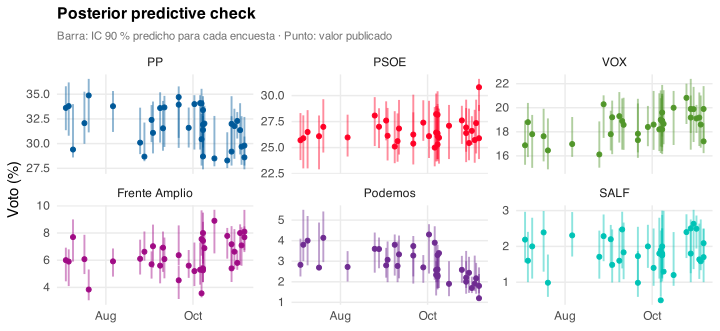
99 % de los valores publicados cae dentro del IC 90 % predicho.
Posterior del día E
Paso intermedio: modelo 1, aún sin el error histórico, que se añade después. Media entre casas, con todos los efectos aleatorios.
PP
30,5
29,8 – 31,2
PSOE
27,2
26,5 – 28,0
VOX
19,6
18,9 – 20,2
Bloque
12,0
11,5 – 12,5
Frente Amplio
6,6
6,2 – 7,1
Podemos
2,1
1,9 – 2,3
SALF
1,9
1,7 – 2,2
Cuatro fuentes de incertidumbre
El modelo de encuestas: ¿cuánto voto tiene cada partido?El error histórico: las encuestas se equivocan en conjuntoEl reparto provincial: las encuestas nacionales no lo publicanLas candidaturas: no son iguales en todas las provincias
El error histórico
124 encuestas de la última semana de 5 generales , de 2015 a 2023.
Las encuestas infraestiman al PSOE 1,3 puntos; corrijo la mitad, +0,7
Desviación típica entre 1,3 y 2,6 puntos según el partido
Correlación entre el error con PP y el error con VOX: −0,51
Esa correlación sale del modelo full bayesian , con 44 elecciones. Su IC 90 % es [−0,69; −0,25].
Si las encuestas se pasan con uno, se quedan cortas con el otro: fallan más al repartir entre PP y VOX que con su suma.
El error se suma al posterior en puntos porcentuales, y después el vector se reescala para sumar 100.
La media solo se corrige en el PSOE: en los demás partidos el signo cambia según las elecciones incluidas.
Corrijo la mitad porque el leave-one-out no valida la corrección completa fuera de muestra.
La correlación viene de la matriz Omega del post full bayesian, en escala logit. Aquí la aplico a un error en puntos: es una aproximación.
Las 3 generales con VOX daban +0,92. Con tan pocas elecciones, ese valor es muy inestable.
El BLOQUE lleva un shock propio de 1,5 puntos: es un supuesto, no una estimación.
El error histórico, en código
Cada fila de d6 es un draw: sumo un error distinto a cada una.
# PP, PSOE, VOX, SUMAR + Podemos y SALF: errores correlacionados <- MASS:: mvrnorm (n_draws, error_mu, Sigma_error)1 : 5 ] <- pmax (d6[, 1 : 5 ] + e, 0 )# BLOQUE: shock propio, y vuelta a sumar 100 "BLOQUE" ] <- pmax (d6[, "BLOQUE" ] + rnorm (n_draws, 0 , 1.5 ), 0 )<- 100 * d6 / rowSums (d6)# Ahora sí, reparto el BLOQUE <- cbind (d6[, 1 : 5 ], d6[, "BLOQUE" ] * d2)
La capa no reestima nada: solo transforma los draws.
d6 son los draws del modelo 1 en porcentaje, con SUMAR y Podemos sumados en una columna. La historia solo conoce esa suma.Sigma_error lleva la correlación PP-VOX de la slide anterior. Sin esa matriz, el error de cada partido sería independiente.Simplificado: el código real reparte después el error de la suma entre SUMAR y Podemos, con el peso de cada lista en el draw. Por eso el resultado final tiene 14 categorías.
Código real: extraer_shares13(), en blog_quarto/2026/10/simular_escanos.R.
Provincia: la idea
Hipótesis: cada partido mantiene su desvío provincial del 23J.
% provincia = % nacional × (% provincia 23J / % nacional 23J)
¿Cuánto hay que perturbar ese ratio? En Andalucía usé una Dirichlet con un divisor elegido a mano.
Backtest provincial, 912 celdas: promete 90 %, cubre 66 % .
Provincia: dos efectos con brms
El cambio de ratio tiene un efecto de comunidad y otro de provincia .
bf (~ 0 + partido + repeticion + (0 + partido || codigo_ccaa),~ 0 + celda_sigma
La cobertura sube a 94 % , calculada con las mismas elecciones que calibran los efectos.
Sin la transición probada, la cobertura no cambia (leave-one-transition-out ).
dlr es Δ log r: cuánto cambia el logaritmo del ratio provincial de un partido entre dos elecciones.0 + partido quita el intercepto común: cada partido tiene su propia media. repeticion marca las elecciones repetidas, donde la geografía apenas cambia.| frente a ||:|, brms estima las correlaciones entre los efectos del grupo. Con ||, los estima independientes.(0 + partido || codigo_ccaa) da a cada comunidad una desviación por partido, sin correlaciones. Cada partido tiene su propia desviación entre comunidades: su τ_c.¿Por qué no (1 | partido:ccaa)? Porque daría una única τ_c para todos los partidos, y VOX se mueve en bloque por comunidad, mientras que el PP se mueve más provincia a provincia.
sigma ~ 0 + celda_sigma es un modelo distribucional: la desviación residual también tiene su regresión. brms modela sigma en escala logarítmica.celda_sigmaPP × fresca, PP × repetición, VOX × fresca, etc. Cada celda tiene su propia desviación residual: su τ_p.Transición es el paso de una elección a la siguiente. Es fresca si hay tiempo real entre ambas, como del 10N al 23J. Es repetición si se repite a los pocos meses, como del 20D al 26J.Por qué hace falta: en las repeticiones el reparto provincial apenas cambia. Con una sola sigma, esas elecciones reducirían el ruido estimado para el 29N. τ_p del PP: 0,173 en frescas y 0,050 en repeticiones. τ_p de VOX: 0,199 y 0,063.El 29N es una transición fresca: la simulación usa las τ_p de esas celdas.
En la simulación, cada draw multiplica el ratio por exp(η + ε) y se renormaliza, para no cambiar el voto nacional.
La cobertura de esta slide es in-sample . El leave-one-transition-out reestima sin la transición probada y la cobertura no se mueve.
Provincia: de los draws al voto
Para cada partido, cada draw recibe sus propios efectos de comunidad y de provincia.
<- matrix (rnorm (n_draws * n_ccaa), n_draws) * tau_c # comunidad <- matrix (rnorm (n_draws * n_prov), n_draws) * tau_p # provincia <- sweep (exp (eta[, ccaa_idx] + eps), 2 , ratio_23j, ` * ` )<- M / as.numeric (M %*% w) # el voto nacional no cambia <- voto_nac * M # draws × provincias
tau_c y tau_p son vectores con un valor por draw: arrastran la incertidumbre del ajuste.
Todo es para un partido. M tiene una fila por draw y una columna por provincia: es el ratio “% provincia / % nacional” de cada draw.
eta y eps:rnorm() * tau es lo mismo que rnorm(n, 0, tau). Se escribe así porque tau cambia en cada draw, y matrix * vector recicla por columnas: cada fila recibe el tau de su draw. No es la parametrización no centrada: aquí no hay muestreador.Son efectos nuevos , no los r_codigo_ccaa ajustados. Del ajuste solo tomo las desviaciones.
En brms equivale a predecir con allow_new_levels = TRUE y sample_new_levels = "gaussian" para todas las comunidades, incluso para las que el modelo ya conoce. Aprovecha cuánto varían las comunidades en general, no cómo se movió cada una.
Paso 1, el shock: eta[, ccaa_idx] copia el efecto de cada comunidad a sus provincias. + eps añade el de cada provincia. exp() lo pasa a un factor alrededor de 1: 1,10 es un 10 % más.Paso 2, el ratio perturbado: sweep(..., 2, ratio_23j, "*") multiplica el ratio dl 23J de cada provincia por su shock. Aquí el ratio deja de ser el del 23J.Paso 3, renormalizar: w es el peso de cada provincia en los votos válidos. M %*% w es la media ponderada de los ratios de cada draw. Sin shock vale 1, con shock no. Al dividir por ella vuelve a valer 1 y el voto nacional no cambia.as.numeric() hace falta porque M %*% w es una matriz draws × 1. Como vector, divide cada fila por su valor.Consecuencia: el shock es relativo. Si el partido sube en unas provincias, baja en otras.
Paso 4, el voto: voto_nac tiene un valor por draw. Se recicla por columnas: cada fila se multiplica por su voto nacional.Ejemplo inventado: 2 provincias, w = (0,6; 0,4), ratios del 23J (1,2; 0,7), voto nacional 30 %. Un shock de 1,10 en A da ratios (1,32; 0,70), con media 1,072. Renormalizado: (1,231; 0,653). Voto: 36,9 % y 19,6 %. La media ponderada sigue en 30 %: A sube un 2,6 % y B baja un 6,7 %.Los partidos grandes usan draws del posterior de los tau. Los regionales usan un valor fijo (plug-in ) y no arrastran esa incertidumbre.
Simplificado: el código real hace esto para cada partido y después normaliza dentro de cada provincia, para que sume 100. Luego aplica las reglas de candidaturas.
Código real: simular(), en blog_quarto/2026/10/simular_escanos.R.
Provincia: qué produce
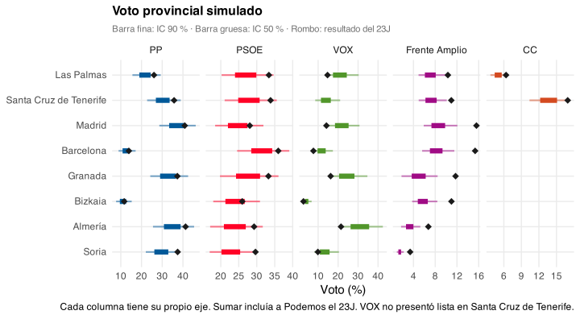
Las dos primeras filas son Canarias. Coalición Canaria solo compite allí, por eso su columna solo tiene esas dos filas.
En Canarias, el Frente Amplio va en lista unida con Podemos: es la regla unida de la slide de candidaturas.
VOX no tuvo lista en Santa Cruz de Tenerife el 23J. Su reparto allí usa el ratio del 10N, y por eso esa celda no lleva rombo.
CC sale de la composición del BLOQUE del modelo 2, con el reparto provincial del 23J.
Madrid, Barcelona, Granada, Bizkaia, Almería y Soria son ejemplos de provincias distintas.
Eje x: cada columna tiene su propia escala, porque el voto de cada partido se mueve en rangos muy distintos. Compara filas dentro de una columna, no longitudes entre columnas.
Las candidaturas de cada provincia
Registradas en octubre: simular(listas = "mapa") aplica una regla por provincia.
Listas separadas
33
La mayoría
Con Adelante Andalucía
8
Andalucía
Lista unida
6
Canarias, C. Valenciana
Sin Podemos
4
Cataluña
Sin Frente Amplio
1
Teruel
Adelante Andalucía y el trasvase de Podemos en Cataluña son priors , no encuestas.
D’Hondt
<- function (votos, escanos) {<- setNames (integer (length (votos)), names (votos))for (i in seq_len (escanos)) {<- which.max (votos / (resultado + 1 ))<- resultado[ganador] + 1 L
Antes, cada provincia deja a 0 a quien no llega al 3 %
Ceuta y Melilla eligen 1 escaño: D’Hondt equivale a mayoría simple
Resultado: las candidaturas mayores
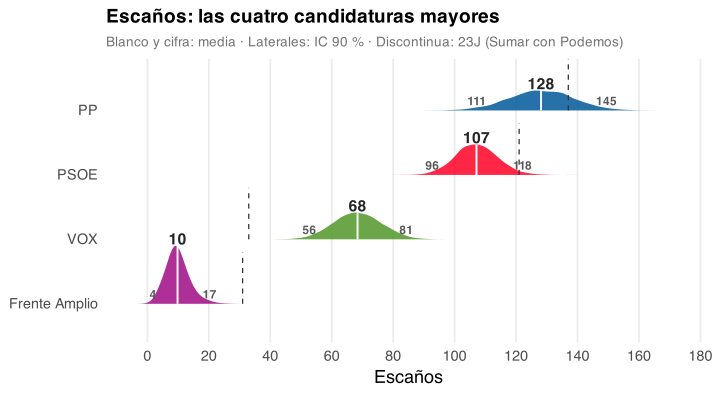
Resultado: el resto
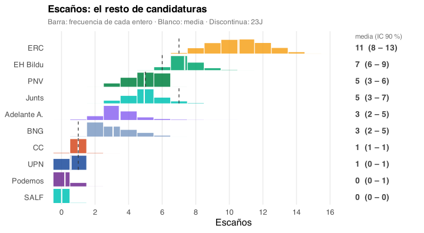
Resultado: Canarias
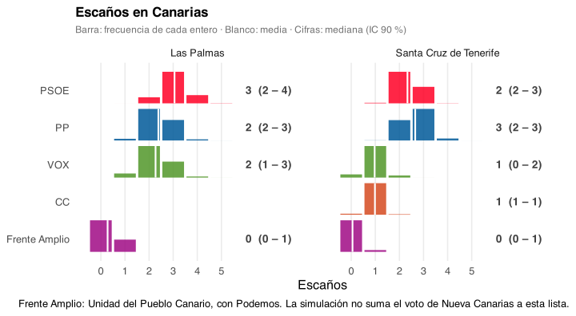
Las Palmas elige 8 escaños y Santa Cruz de Tenerife, 7.
Cada provincia reparte con D’Hondt y umbral del 3 %, igual que las demás.
CC sale de la composición del BLOQUE (modelo 2) y de su reparto provincial del 23J. No hay encuestas de CC por provincia.
VOX en Santa Cruz de Tenerife usa el ratio del 10N, porque no tuvo lista el 23J.
Limitación: la lista real es Unidad del Pueblo Canario, con Nueva Canarias, IU, Movimiento Sumar y Podemos. La regla unida solo suma Frente Amplio y Podemos.El voto de Nueva Canarias no se suma a esa lista, y OTROS, que pesó un 9,2 % en Las Palmas el 23J, no compite por escaños. Sus escaños están probablemente infraestimados.
¿Qué mayoría?
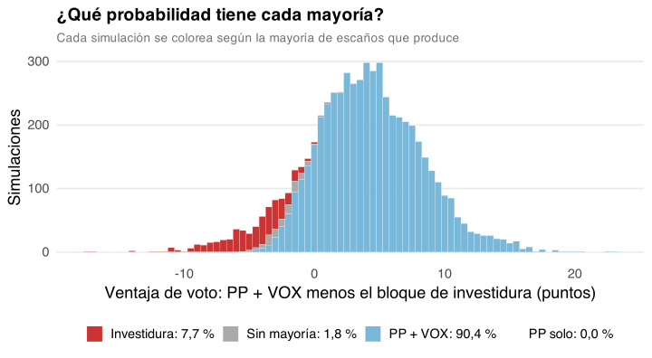
Cada draw es un Congreso
Con los draws, una pregunta sobre mayorías es contar. Código real, sobre las simulaciones de esta charla:
<- readRDS (here ("outputs" , "escanos_draws.rds" ))# P(PP + VOX tienen mayoría absoluta) mean (draws$ PP + draws$ VOX >= 176 )## [1] 0.9893333 # P(PP tiene más escaños que PSOE) mean (draws$ PP > draws$ PSOE)## [1] 0.8123333 # intervalo de la suma quantile (draws$ PP + draws$ VOX, c (0.05 , 0.5 , 0.95 ))## 5% 50% 95% ## 180 193 204
Cada fila de draws es un reparto completo de 350 escaños. mean() sobre una condición lógica da la proporción de draws donde se cumple.
Esa proporción es la probabilidad posterior, condicionada al modelo y a sus supuestos. No es la probabilidad de lo que pasará el domingo sin más.
Sumar draw a draw conserva la dependencia entre partidos. Con correlación negativa, el intervalo de PP + VOX es más estrecho de lo que sale al sumar los dos intervalos.
No se pueden sumar los extremos de dos intervalos: ese resultado no es el IC 90 % de la suma.
Cualquier otra pregunta funciona igual: basta con escribir la condición, sin ajustar otro modelo.
Con 6.000 draws, una probabilidad cerca de 0 o de 1 tiene ruido de Monte Carlo: no conviene dar muchos decimales.
¿Y si lo hubiera hecho antes?
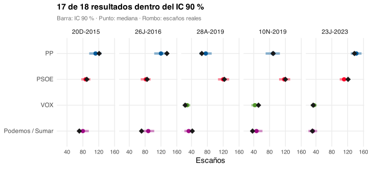
Usa una media simple de encuestas: prueba las capas de error y de escaños, no el modelo 1.
Limitaciones
Según Virgilio Gómez Rubio : lo correcto sería meter toda la incertidumbre en un único modelo. Lo he intentado en el post full bayesian .
El modelo estima la media de las encuestadoras , no el resultado
No calibra el error por casa, y el error agregado sale de 5 elecciones
El reparto provincial hereda el 23J
No sabemos qué participación supone cada encuestadora
La covarianza del error es fija. En el modelo único, P(PP + VOX ≥ 176) baja del 98,9 % al 94,6 %
Covarianza fija: la capa de error sortea con una sola Σ: las σ de las 5 generales y la correlación PP-VOX en su mediana del full bayesian , −0,51. No arrastra la incertidumbre de ninguna de las dos.El full bayesian sortea μ, σ y Omega en cada draw.
Da P(PP + VOX ≥ 176) = 94,6 % (vivo/conjunto_mayorias.csv, 4 nov). Su sensibilidad (17_sensibilidad_omega.R) indica que la correlación no es lo principal: con PP-VOX forzada a +0,5 da 90,6 %. La diferencia viene sobre todo de la incertidumbre de σ y μ.
La dejo fija porque se explica mejor: una correlación y unas σ, sin una capa más.
Un único modelo
Más detalle en el post full bayesian .
Es el intento de meter toda la incertidumbre en un único modelo, en Stan: encuestas, resultados y error se estiman a la vez.
Notación: gris es dato, blanco es parámetro y doble círculo es una cantidad determinista.
A, generales: las encuestas y miden el voto latente θ de cada semana, con el efecto de cada casa β. El resultado r solo existe para las 5 generales pasadas.B, autonómicas: el error de cada encuesta z depende de la elección y de la casa. Aporta 39 elecciones.En medio, lo compartido: Ω es la correlación entre los errores de los partidos. Conecta generales y autonómicas.De aquí sale la correlación PP-VOX de la slide “El error histórico”: 5 generales y 39 autonómicas, 44 elecciones.
Para 2026, el error ε no se observa: se sortea con el sesgo μ y la covarianza Σ de las generales.
Es una versión simplificada del modelo. El detalle está en el post.
Gracias
Una foto de las encuestas, no una predicción del domingo.
github.com/joscani/bayesian-metaanalisis
Priors
Los priors por defecto de brms en multinomial son impropios . Los sustituyo por priors propios en log-odds.
mutate (prior = case_when (== "b" ~ "normal(0, 2)" ,== "Intercept" ~ "normal(0, 2)" ,== "sd" ~ "exponential(1)" ,TRUE ~ prior
Impropio significa plano: no integra a 1. Por eso no se puede muestrear solo del prior con sample_prior = "only".
normal(0, 2) en log-odds es muy poco informativo: un intercepto de 2 es una categoría unas 7 veces (e²) mayor que el PP.exponential(1) obliga a las desviaciones a ser positivas. Acumula probabilidad cerca de 0 y deja una cola moderada.Los mismos priors valen para los dos modelos.
Diagnósticos
Modelo 1
1,002
2.663
0
12.000
Modelo 2
1,001
4.294
0
12.000
ESS mínimo: el menor de Bulk_ESS y Tail_ESS, en efectos fijos y desviaciones de casa.
Rhat compara la variación dentro de cada cadena y entre cadenas. Lo buscado es un valor cercano a 1; la referencia habitual es < 1,01.Bulk_ESS es el tamaño de muestra efectivo para el centro de la distribución. Tail_ESS , para las colas, que son las que usan los intervalos.Divergentes: transiciones donde el muestreador falla por la geometría del posterior. Con muchas, no hay que fiarse del ajuste.Muestras: 4 cadenas × (4.000 − 1.000 de warmup) = 12.000.
Encuestas del modelo 1
Voto publicado en %, ordenado de la más reciente a la más antigua. SUMAR corresponde a Frente Amplio.
Es la tabla de entrada del modelo: el nombre de cada casa enlaza a la fuente.
Fuera quedan el CIS, ElectoPanel y las encuestas sin tamaño muestral publicado.
SUMAR es la columna de las fuentes. En esta charla, esa familia corresponde a Frente Amplio.El buscador y las columnas ordenables permiten responder preguntas en directo.
Encuestas del modelo 2
Voto publicado en %, sobre la muestra completa. Solo encuestas con todos los regionales.
Solo entran encuestas con los 7 regionales. Muchas vienen de ElectoPanel, que aquí sí está.
La ventana empieza en junio de 2025, frente a julio de 2026 en el modelo 1.
Los porcentajes son sobre la muestra completa. BLOQUE es su suma; el modelo convierte esos valores en votos dentro del BLOQUE.
Efectos casa
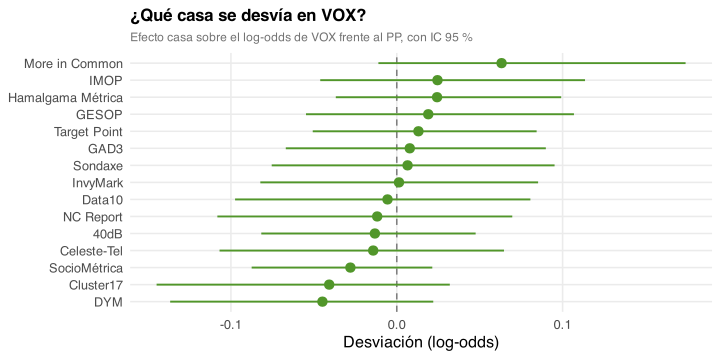
Cada punto es la desviación de una casa en el log-odds de VOX frente al PP, respecto a la media de las casas.
Positivo: esa casa da a VOX más voto frente al PP que la media. Es un sesgo relativo a las demás, no frente al resultado.
Este gráfico usa IC 95 %, la salida por defecto de ranef(). El resto de la charla usa IC 90 %.
Las casas con pocas encuestas tienen intervalos más anchos y se encogen hacia 0.
El efecto es constante en toda la ventana: no hay deriva por casa.
¿De dónde sale la incertidumbre?
La capa de error histórico es la que más ensancha el intervalo de PP + VOX.
Solo posterior
196
8
100,0 %
+ error histórico
194
22
99,2 %
+ shock provincial
195
11
100,0 %
Todas las capas
193
24
98,9 %
4.000 simulaciones por fila, con las candidaturas de cada provincia.
Cada fila enciende capas de simular(): con_error para el error histórico y con_ruido para el shock provincial.
“Solo posterior” es el paso de la slide “Posterior del día E”. Los escaños de los resultados son la última fila: incluyen el error histórico.
El shock independiente se cancela en parte al sumar 52 provincias. Por eso mueve mucho cada provincia y poco el total nacional.
La probabilidad de la última fila difiere algo de la slide “¿Qué mayoría?”: aquí son 4.000 simulaciones y allí, 6.000, con otra semilla.
Con la correlación PP–VOX negativa, el error en PP y en VOX se compensa en parte al sumarlos.
Candidaturas unidas frente a reales
Las dos simulaciones comparten modelo, semilla y capas. Solo cambia la regla provincial.
PP
123 (106 – 140)
124 (107 – 141)
PSOE
111 (100 – 123)
110 (99 – 122)
VOX
68 (55 – 80)
68 (56 – 81)
Frente Amplio
17 (7 – 30)
10 (5 – 18)
ERC
9 (7 – 12)
11 (8 – 13)
Adelante A.
0 (0 – 0)
3 (2 – 6)
Podemos
0 (0 – 0)
0 (0 – 1)
“Unidas” aplica la regla unida en las 52 provincias. “Reales” aplica la regla registrada en cada una.
En “Unidas”, Frente Amplio incluye a Podemos, y por eso Podemos sale con 0 escaños.
Adelante Andalucía solo compite en “Reales”. Su voto sale de un prior centrado en su resultado de las autonómicas de mayo, no de encuestas de generales.
Comparten semilla, modelo y capas: la diferencia es el efecto de la regla provincial.
PP y VOX, conjuntamente
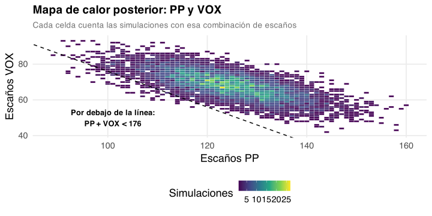
Cada celda cuenta las simulaciones con esa combinación de escaños.
La línea discontinua marca PP + VOX = 176: por debajo no suman mayoría.
Una correlación negativa del error inclina la nube: más PP suele ir con menos VOX. Es el reparto del que hablaba en la slide del error histórico.
Lo que muestra es que el error se compensa en la suma, no que PP y VOX se disputen los mismos votantes.
Validación real: Andalucía, 17-M
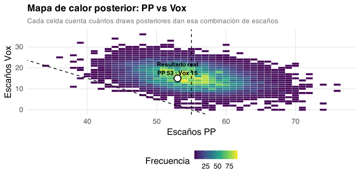
Es la única validación con una elección real fuera de muestra, y usa la versión anterior del flujo.
Aquella versión era distinta: (time | empresa), empresa nueva en la predicción, correlaciones fijadas a mano y reparto con Dirichlet.
No acerté el número exacto: el resultado cayó dentro de la región de plausibilidad.
Es un solo caso: no demuestra que el flujo esté calibrado.
![DAG simplificado del modelo conjunto: generales a la izquierda, autonómicas a la derecha y, en medio, las matrices de covarianza que comparten.]()